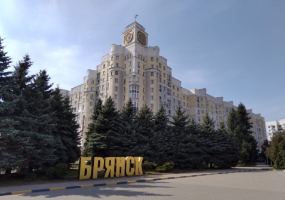

О нашем городе

Брянск — административный центр Брянской области,
один из старейших городов России.
Расположен на берегах реки
Десны (при впадении в неё Болвы и Снежети).
Условной датой основания считают 985 год, а первое летописное
упоминание (под названием Дебрянск) относится к 1146 году.
Достопримечательности
-
Курган Бессмертия

Один из символов города. Это искусственный насыпной холм высотой около 12 метров,
увенчанный 18-метровой стелой с бронзовой звездой. Мемориал посвящён подвигу
советских солдат в годы Великой Отечественной войны. В основание кургана заложили
капсулы с землёй из мест сражений. Рядом — Вечный огонь и братская могила.
Находится в Центральном парке «Соловьи». -
Покровская гора

Историческое ядро города: именно здесь в X–XI веках возникло древнерусское поселение,
позже превратившееся в крепость. С вершины открывается панорамный вид на реку Десну. -
Свято-Троицкий кафедральный собор

Один из самых крупных и красивых храмов Брянской области. Его построили в 2006–2012 годах
взамен разрушенного в советское время Новопокровского собора. В храме хранятся мощи святого
князя Олега Брянского. Рядом возвышается 80-метровая колокольня «Пересвет».
Комплекс особенно эффектно выглядит вечером, когда включается подсветка.
Интересные места
| Название | Описание | Адрес | Рабочие часы | Дополнительная информация |
|---|---|---|---|---|
| Курган Бессмертия | Мемориальный комплекс, посвящённый павшим в Великой Отечественной войне. | ул. Дуки, д. 76/1, г. Брянск | 00:00 - 00:00 | С вершины открывается панорамный вид на реку Десну. |
| Покровская гора | Историческое сердце Брянска и самая высокая точка города (мыс высотой 70 метров над рекой Десной). | ул. Покровская Гора, 2, г. Брянск, Брянская область | 00:00 - 00:00 | На горе также расположен мемориальный комплекс в честь 1000-летия Брянска и памятник Александру Пересвету. С вершины открывается панорамный вид на город. |
| Свято-Троицкий кафедральный собор | Главный православный храм Брянской области и кафедральный собор Брянской епархии. | проспект Ленина, 58-а, г. Брянск, Брянская область | 08:00 - 19:00 | Главная святыня — рака с мощами святого благоверного князя Олега Брянского. |
| Площадь Карла Маркса | Центральная площадь Брянска с исторической застройкой, круглым сквером и фонтаном. | Площадь Карла Маркса, г. Брянск, Брянская область | 00:00 - 00:00 | Является популярным местом для прогулок и городских праздников. |
Карта Брянска
Часто задаваемые вопросы
Как добраться до исторических мест в городе?
Добраться до всех мест можно на городском общественном транспорте.
В Брянске хорошо развита сеть автобусов, троллейбусов и маршрутных такси.
Например, маршрутка №150 следует от Кургана Бессмертия до ТРЦ «Аэропарк».
Для перемещения по центру удобно использовать любой вид наземного
транспорта,
идущий в сторону центральных улиц, где расположены
такие объекты, как:
- Площадь Карла Маркса
- Покровская гора
- Свято-Троицкий кафедральный собор
Где находятся лучшие рестораны в центре города?
В центре Брянска есть несколько популярных заведений, которые подойдут для разных случаев.
-
Ресторан «Seven»
Находится прямо на площади Карла Маркса, 7.
Это универсальное место с видом на парк, подходящее как для деловых обедов,
так и для семейных торжеств.
Время работы: Пн-Чт с 12:00 до 23:00, Пт-Вс — до полуночи. -
Ресторан «Зелёный»
Расположен в самом центре города по адресу ул. Октябрьская, 114.
Известен своей уникальной системой обслуживания (оплачивается вход,
а блюда по демократичным ценам) и высоким уровнем кухни.
Работает с 11:00 до 00:00.
Какие культурные мероприятия проходят в этом месяце?
В октябре 2026 года в Брянске запланировано несколько интересных культурных событий.
-
Концерт «Звезды оперной сцены»
8 октября в Брянской областной филармонии выступит ведущий
солист театра «Геликон-опера» Михаил Гужов. В программе — романсы Глинки,
Чайковского, Рахманинова. Начало в 19:00. -
Концерт «Симфония Стинг при свечах»
9 октября там же, в филармонии, состоится концерт оркестра CAGMO
с программой по творчеству Стинга. Начало в 19:00. -
Конкурс «Танцы-брянцы»
Со 2 по 4 октября в Губернаторском Дворце имени Ю. А. Гагарина
пройдет межрегиональный конкурс по традиционной пляске,
который соберет участников из семи регионов России.
Какой лучший способ познакомиться с местными достопримечательностями?
Лучший способ — это пешеходная экскурсия. Она
позволяет не только увидеть
главные объекты, но и погрузиться в историю города.
Обычно маршрут проходит по «Золотой миле» города, включает
осмотр площади Карла Маркса,
Покровской горы (самой высокой
точки с панорамным видом), Кургана Бессмертия,
Свято-Троицкого
кафедрального собора и набережной реки Десны.
Это могут быть как индивидуальные, так и групповые прогулки.
Длительность стандартной обзорной экскурсии составляет около 2,5 часов.
Где можно приобрести билеты на туристические экскурсии?
Билеты на экскурсии по Брянску удобнее всего покупать онлайн на специализированных платформах.
Стоимость прогулок с гидом начинается от 600–605 рублей за человека в групповой экскурсии.
Индивидуальные экскурсии обойдутся дороже — от 3 100 рублей за группу.